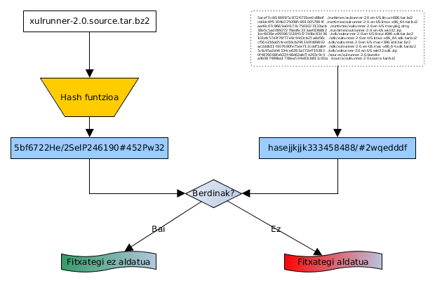

Laburpen algoritmoak
Mikel Egaña Aranguren
Laburpen algoritmoak (Digest)
Jatorrizko eduki osoa ordezkatzen duen kriptograma ekoizten dute:
- Tamaina finkokoa, jatorrizko edukia edozein izanda
- Jatorrizko eduki guztia ordezkatzen du
- Edukia apur bat aldatzen bada ere guztiz aldatzen da
- Eduki berdinarentzat beti ekoizten du bera
Laburpen algoritmoak
Hash funtzioak:
- Ez daukate alderantzizko funtziorik (one-way function): ezin da edukia lortu kriptogramatik
- Ezin dira deszifratu, ez dutelako zifratzen (laburtu)
Informazioaren Osotasuna ziurtatu
http://ftp.mozilla.org/pub/mozilla.org/xulrunner/releases/2.0/MD5SUMS

Nola baieztatu osotasuna?
Informazioaren Osotasuna ziurtatu

Pasahitzak gorde: identifikatu

Pasahitzak gorde: arazoak
- Gako berdinek hash berdina sortuko dute
- Gako espazioko Hash guztiak pre-kalkulatu daitezke
Pasahitzak gorde: arazoak
Soluzioa: "gatza" (Salt) edo hazia erabiltzea

Pasahitzak gorde
Identifikazioa gatza gehituta

Pasahitzak gorde
Gatza erabiltzearen abantailak
- Gakoa berberak kodifikazio ezberdina du aldi bakoitzean
- Indarrezko erasoak zailago egiten ditu
DB-a gakoekin eta gatzarekin lapurtzen badute, ez dago zereginik
Pasahitzak gorde
Linux:
- Kokapena: /etc/shadow
- Ikusteko: sudo cat /etc/shadow
- Formatua: user:$Erabilitakoalgoritmoa$gatza$LaburpenKriptografikoa:A:B:C:D:E:F:
Pasahitzak sistema eragileetan
Linux:
- Erabilitako algoritmoa: 1: MD5; 2: Blowfish; 3: NT; 5: SHA-256; 6: SHA-512
- Gatza: ausazko katea
Pasahitzak sistema eragileetan
Linux:
- A: zenbat egun pasa diren gakoa aldatu gabe (1970/01/01-tik)
- B: zenbat egun gakoa aldatu ahal izateko
- C: zenbat egun egon ahal den gakoa aldatu gabe
Pasahitzak sistema eragileetan
Linux:
- D: zenbat egun aurretik abisatu behar zaio erabiltzaileari pasahitza aldatzeko
- E: zenbat egun pasahitza iraungitzetik kontua desaktibatu arte
- F: zenbat egun kontua desaktibatu arte (1970/01/01-tik)
Datu edo fitxategien identifikatzailea
Bertsioak kontrolatzeko sistemak, Git gisa, edukia sha1sum bidez identifikatzeko
Magnet URI-ak fitxategiak trukatzeko (Adib.: Magnet Links BitTorrenten)
Hash table datu-egitura programazio hizkuntza askotan
Laburpen algoritmo ezagunenak
MD5
SHA-3
RIPEMD
MD5
Kriptografikoki apurtuta baina oraindik erabiltzen da, batez ere osotasuna bermatzeko
128 bit-eko hash-ak
SHA-3
SHA-0..2 MD5-an oinarrituta zeuden, SHA-3 ez
224...512 bit
Open SSL, Ethereum, ...
RIPEMD
128, 160, 256, 320 bit
Bitcoin-ek RIPEMD-160 erabiltzen du
Laburpen algoritmoak: Arazoak
- Talkak: bi textu ezberdinek laburpen berdina sortzea
- Algoritmoa ahultzen duten erasoak
Laburpen algoritmoak: Soluzioak
- Laburpen luzeagoak sortzen dituzten algoritmo berriak erabili
- Algoritmo berriak sortu